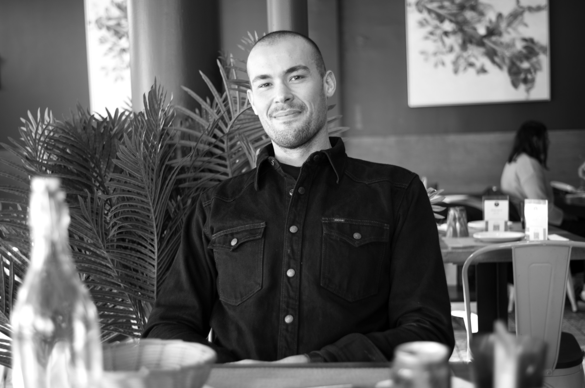

High-leverage content systems for founders at the highest level — built on fifteen years of craft across film, audio, and live production.
Chris Hall is a New York City–born media operator who builds high-leverage content systems for founders at the highest level. He combines early technical training in television, film, music, and photography with firsthand startup experience across consumer apps, influencer monetization, brand growth, and major influencer campaigns. After co-founding and operating multiple startups, he founded Hall Media in 2019 to help executives and founders develop durable personal brands and long-term media strategy. Since 2020, Chris has produced Garry Tan’s personal video content, and since 2022 he has been the producer of Jessica Livingston and Carolyn Levy’s podcast, The Social Radars, working at the intersection of storytelling, systems, and operator-level execution. In January 2026, he joined Y Combinator full-time in San Francisco as Senior Video Producer, overseeing flagship content at one of the most influential institutions in global technology.